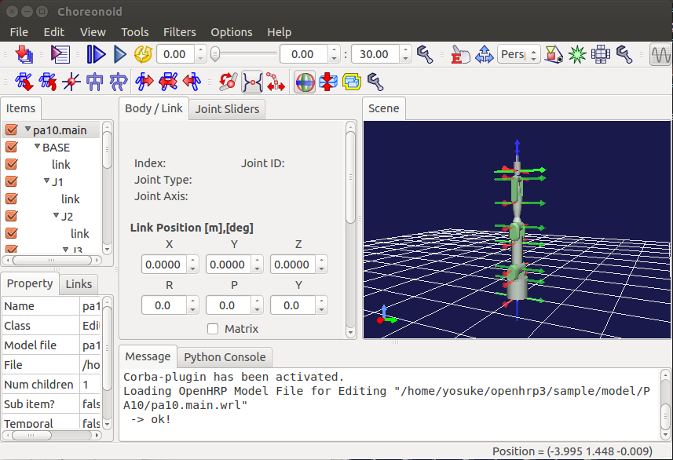
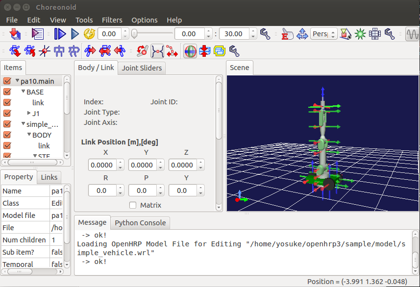
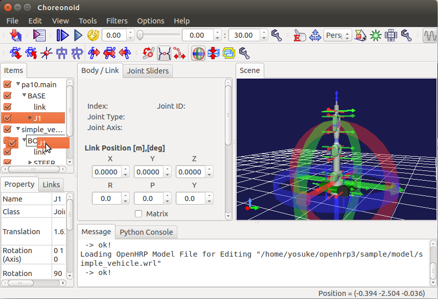
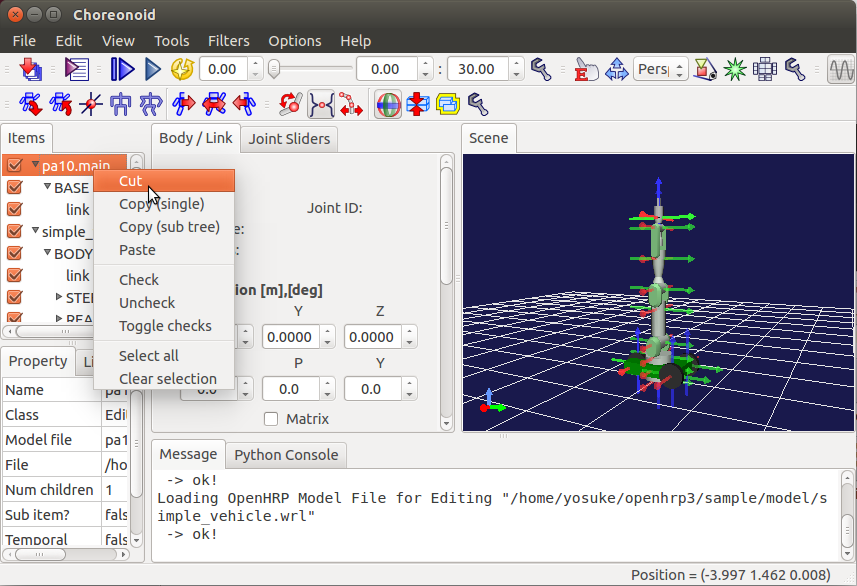

Choreonoid Editor Tutorial¶
Creating a robot from scratch¶
Preparation¶
Please prepare the following data.
- VRML97 files that defines shapes of each link
- mass properties(mass, center of mass, moments of inertia) of each link
- kinematic properties(relative positions/orientations between joints)
- joint properties(movable ranges, joint velocity limits and so on)
Creation¶
First, create EditableBodyItem (File->New->EditableBodyItem)
- create JointItem (File->New->JointItem) as a child of EditableBodyItem (for the first joint) or JointItem (for other joints)
- create LinkItem (File->New->LinkItem) as a child of JointItem
- create PrimitiveShapeItem (File->New->PrimitiveShapeItem) and/or MeshShapeItem (File->New->MeshShapeItem) as a child of LinkItem
- create SensorItem (File->New->SensorItem) as a child of JointItem
Repeat procedure above until all necessary items are created. Then (or while creating items), set properties of items using the prepared data.
Save¶
Save the created model by File->Save Selected item as.
Combining two robot to one¶
In this example, we combine arm (PA10) robot and wheel robot to create mobile arm robot.
First, we load the arm robot.
Select “File” -> “Open ...” -> “OpenHRP Model File for Editing” menu item.
Warning
Here, please do not select “OpenHRP Model File” menu item, but select “OpenHRP Model File for Editing”.
Dialog box will be appeared and choose “pa10.main.wrl” file from the OpenHRP sample models folder.
Arm robot model is now loaded. Please turn on all the checkbox at side of the items to let the robot appear in the scene panel.
We also load the wheel robot.
Select “File” -> “Open ...” -> “OpenHRP Model File for Editing” menu item.
Dialog box will be appeared and choose “simple_vehicle.wrl” file from the OpenHRP sample models folder.
To connect the arm robot to wheel base, click the “J1” item of PA10 robot model and drag the item over the “BODY” item of simple_vehicle model.
Now, we delete the body of arm robot model by right clicking the item.
Select the root model item and select “File” -> “Save Selected Items As” menu item to save the model in VRML format.
You can also select URDF to SDF format to save your model within the dialog.